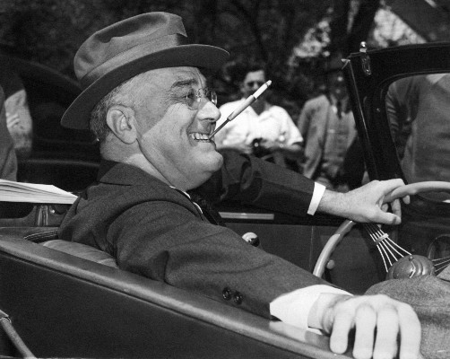

#9760 Ein Teufelskerl
Alternativ: Treasure of the Yankee Zephyr (Englischer Titel)


 IMDB-Wertung: 5.7 / 10
IMDB-Wertung: 5.7 / 10  Metascore: 0
Metascore: 0 
Am Ufer eines Sees stolpert Jäger Gibbie unverhofft über das Wrack eines Transportflugzeuges aus dem 2. Weltkrieg. An Bord findet er kistenweise Whiskey und alte Orden, die er sofort zu Geld macht. Gemeinsam mit seinem Freund Barney und seiner Tochter plant er, die restliche Beute aus dem Wrack zu bergen und zu versilbern. Doch plötzlich tritt Gangster Brown auf die Bühne und die drei werden von ihm und seinen zwielichtigen Schlägern quer durch die Wildnis Neuseelands gejagt. Denn was sie nicht ahnen: Die "Yankee Zephyr" hatte Goldbarren im Wert von über 50 Millionen Dollar geladen!
Jahr: 1981
Dauer: 109 Minuten
FSK: 12
Land: Australien Studio: Ascot FilmverleihTonspuren:
Untertitel:
Auflösung: 1080p (1920x824) Größe: 8222 MB
Genre: Action, Drama, Abenteuer
Regisseur: David Hemmings
Drehbuch: Everett De Roche
Soundtrack: Brian May
Darsteller:
- Ken Wahl als Barney
- Lesley Ann Warren als Sally
 Donald Pleasence als Gilbert Carson
Donald Pleasence als Gilbert Carson George Peppard als Theo Brown
George Peppard als Theo Brown- Bruno Lawrence als Baker
-  Franklin D. Roosevelt als Himself (archive footage) (uncredited)
- Grant Tilly als Collector
- Robert Bruce als The Bartender
- Harry Rutherford-Jones als Harry
- Tony Sparks als Brown's Henchman
- Clark Walkington als Brown's Henchman
- Frank Taurua als Brown's Henchman
- Steve Nicolle als Brown's Henchman
- Dick Jones als Brown's Henchman
- Dennis Hunt als Brown's Henchman
Datei: X:\1981\Teufelskerl, Ein (1981, FSK12, 1920x824).mkv seit 27.10.2018
Festplatte: HD 1980-1986
 Es gibt insgesamt 33 Filme in der Gruppe '1981'
Es gibt insgesamt 33 Filme in der Gruppe '1981'